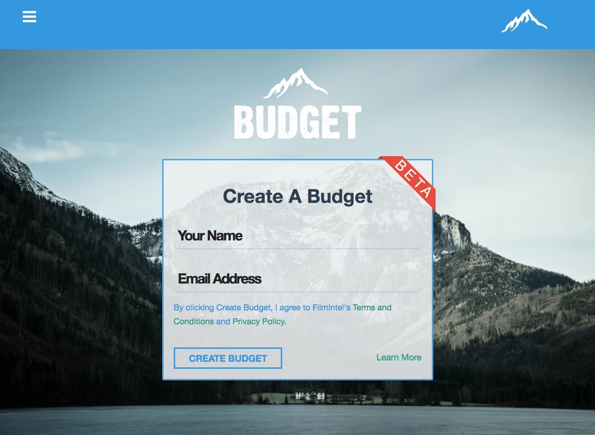
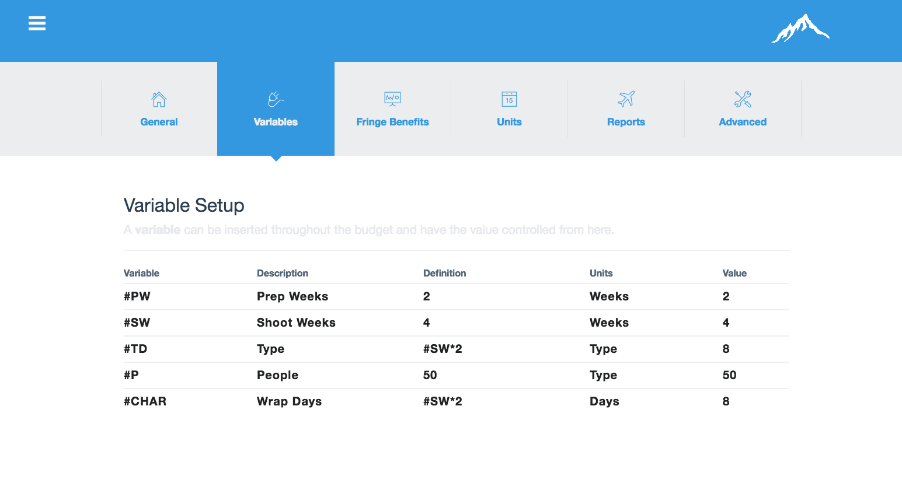

The Launch Pad
A screenwriting competition platform
Together with the engineering team, we designed, built and shipped from scratch a bespoke script competition and coverage system.
This script submission and management platform accepts over 6,000 scripts per year and "automagically" assigns them to a stable of readers and judges for scoring.
The Problem: The Tracking Board's Launch Pad had grown into one of the largest screenplay competitions in the country, but was still managing this flow through their WordPress platform, dispatching scripts to readers and collecting feedback via email, and tracking the progress and score(s) of the screenplays in an Excel spreadsheet. This created a burden on the staff to manually dispatch and tabulate all of the scores from these screenplays in time for the announcement dates.
The Solution: We created a web app that collected script PDFs, processed payments, and assigns the scripts to readers. The application also provided a beautiful web interface for readers to input their scores and feedback saving hours that used to be spent formatting Word docs and creating PDFs. Finally, the system would tabulate the scores for each scorecard and keep high-scoring scripts moving up the judge-chain until winners were chosen.
Challenges: Since the Launch Pad's competitions were well established before we built this app, we had to migrate the user base to the new app including authentication and user purchase history. Because we operate competitions of different mediums (features, pilots, manuscripts), it was a challenge to keep it DRY and simple while still meeting the complete needs of each competition.
Technology Used: Ruby on Rails, Bootstrap, Stripe, Cloudinary, State Machine
FilmBudget.co
Movie and Television Budgeting
Managed a team of overseas engineers to plan, design and engineer this product while building upon the then-new Meteor framework.
Since the framework was new, the team would need to come up with creative solutions for problems that arose from this uncharted world.
Also contributed fronted knowledge to develop the UI of this product.
The Problem: Film budgeting has always been a specific type of planning that doesn't fit into any one tool. The industry standard for film budgeting, Movie Magic Budgeting, is a desktop app only, has no collaborative features, and hasn't received a meaningful update in a decade. The rest of the industry was moving into more advanced tech, but budgeting was stuck.
The Solution: Developing a dead-simple film budgeting web app that is powerful, beautiful, and easy to get started as a user was crucial for us. We chose the Meteor framework because it lends itself to creating a Google Sheets-style application with real-time calculations and it's ability to save to the browser DB and sync with the server. This provided a collaborative budgeting experience, in a great environment, that provided instant calculations.
Challenges: Creating a real-time feedback loop for calculations. Allowing for collaborative editing of the same budget by different users. Dealing with user-created variables and establishing a hook for when a variable is updated it should re-evaluate the formula.
Technology Used: Meteor, Node.js, MongoDB

FlickTracker
End-to-end Film Production Management
Created a central hub of production information complete with cast and crew start paperwork, check request management, and accurate cost reporting to keep everyone on the same page at all times.
The Problem: We set out to improve the on-set production experience by addressing three issues. 1) Managing cast and crew start paperwork and timecards is hard and often done on paper, in a disorganized fashion. 2) There is no central hub of information, everyone has their own work kept in their personal documents or in their head. 3) No effective way for the financier or distributor to keep tabs on the production's progress at all times.
The Solution: By creating a web app that connects departments together, we effectively made a hub of information that collected the necessary information constantly synched across the team's computers. In addition, "check requests" can be created through the application and sent to the appropriate approver for signoff and processing. Finally, all checks or POs tabulate to a central "live budget" so that the distriutor stays informed with the expenses of the production.
Challenges: Keeping all crew member's files synched up on their individual computers while maintaining accurate permissions on a per-user basis. Creating PDF "check requests" and re-rendering them as they move through different states.
Technology Used: Ruby on Rails, Dropbox API, Self-hosted PDF manipulation binaries, heavy mailer use, state machine

FilmFunder
Feature Film Crowdfunding
FilmFunder sold profit participation of projects to individual investors, equity funds, and financial institutions who wish to invest in the entertainment industry. The money earned from the sale of profit participation is used to produce the film. FilmFunder fully researched the background of all projects prior to offering them for investment to ensure superior quality. Once all of the points were sold, the funds were released to the project and production can begin. FilmFunder provided an innovative place for film professionals to conduct transactions with investors to get projects funded.
Various Feature Films
Credits as a Line Producer
After line producing over a dozen feature films, Jude took his knowledge of team building and management and applied it to the tech industry. Movies that he has line produced have appeared in theaters, as well as on SyFy, Lifetime, IFC, and Netflix. He is an active member of the Producer's Guild of America.
About Jude
Whatever you'd like to know.
TL;DR: Jude is a Product Manager who lives and breathes the entertainment industry. He has launched four products to help improve efficiency for filmmakers. Prior to that, he was a line producer for over a dozen films.
Jude is currently serving as the Senior Product Manager for The Tracking Board, an entertainment news company, servicing screenwriters across the world. Jude is committed to developing beautiful and powerful apps to support the film industry.
At The Tracking Board, “The Launchpad” was the first major product that shipped under Jude’s leadership. Built for the purpose of providing screenwriting competitions and coverage services, the Launchpad handles over 5,000 screenplays per year. Since The Tracking Board has finally outgrown its WordPress stack, Jude has been leading the charge to develop a more modern, custom solution for delivering news and tracking specs. He is currently running a closed alpha test for this soon-to-be-launched product.
As a former line producer, Jude has an intimate knowledge of being in the trenches of a film production. Prior to The Tracking Board, Jude spent several years creating software for the film industry to improve upon the previously archaic procedures for budgeting, scheduling, and production management.
He developed FlickTracker, an end-to-end production management application that handles things such as check requests, cast and crew on-boarding, vendor management, and cost tracking. Through building this product, it became clear that the budgeting feature of FlickTracker should be extracted into its own application to reduce complexity, which led to the creation of FilmBudget.co.
Jude also co-founded and led the development of FilmFunder, an equity crowdfunding platform that utilized a unique due diligence procedure to screen prospective projects, and list qualified packages for outside investment.
While working as a line producer for companies such as The Asylum and MarVista Entertainment, Jude specialized in supporting a more vertically integrated structure in order to get every dollar on screen. Movies that he has line produced have appeared in theaters, as well as on SyFy, Lifetime, IFC, and Netflix.
Jude is active in the Open Source Software community and is a regular contributor to Bootstrap.
As a proud New Orleans native, Jude loves music and great food. He especially enjoys exploring new restaurants. He is a member of the Producer’s Guild of America and lives in Los Angeles with his wife and son.